Kinkajous Hold on Late
for 126-119 Victory Over Irukandjis in Cork Bowl 22; Robert Trimble
Wins 4th MVP Award with 16 Receptions and 8 Touchdowns, Jeff Henney
Goes for 22 Catches and 8 Touchdowns in Defeat; Willy Truitt Throws
18 Touchdowns and 0 Interceptions for the Kinkajous; Rookie Weston
Frisz Sets New Rookie Record with 14 Tackles
Click
Here for Stats
(Click
Here for More Pictures! (thanks
to Joe Trimble)
Saturday, December 1st - Cork
Bowl 22 had a lot to live up to after last year’s game was
decided by just one yard. And for the fourth time in the past seven
years, the game was decided by just one touchdown as the Kinkajous
were able to take a late lead and hold off the Irukandjis in the
final minutes for a 126-119 victory. A number of roster issues for
both teams in the months leading up to the game caused a great amount
of 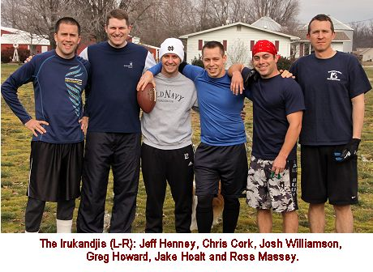 uncertainty.
A surprise retirement from Brooks Wilson was followed by an injury
to Kevin Ryan, and later a cancellation from Josh Massey. Those
incidents opened the door for a pair of rookies (Weston Frisz and
Ross Massey) to make their debuts, with both having solid impacts
for their teams.
The day began with an emotional
press conference from Irukandjis receiver Jeff Henney, who announced
that he would be retiring following the game. Henney, who last played
in Cork Bowl 19, has spent the past two years in Laos. “A
time comes when you realize that dreams don’t last forever,”
remarked Henney. “This game has been great to me over the
years, but it was time to hang up the cleats."
An unseasonably warm 60 degree
day greeted the teams as the Kinkajous began the game with the ball
with all-time leading passer Willy Truitt under center for the 14th
time in his career. Truitt came out firing hitting on his first
three passes as the Kinkajous marched down the field to gain a 7-0
lead on a 14-yard touchdown strike to Evan Barmes. Fresh off his
pre-game retirement announcement, Jeff Henney looked anything like
a player ready to call it quits as he caught 3 straight passes from
Greg Howard to move the Irukandjis past midfield including a 4th
and 1 conversion. However the drive stalled as Howard was unable
to get a pass off on one play and threw three incompletions to turn
the ball over on downs. The Irukandjis held the ball for nearly
8 minutes and ran 8 plays but came 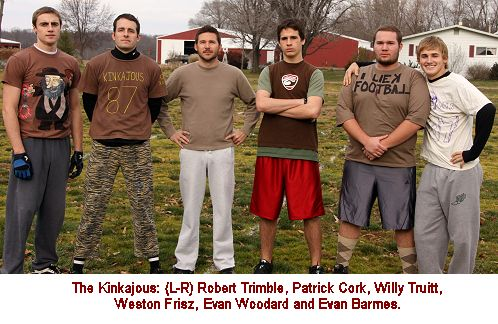 away
without points. “Cork Bowl is always decided by a handful
of missed opportunities, so to start out the game without scoring
was a huge disappointment,” said Henney. The Kinkajous took
advantage of the defensive stop as Truitt completed 3-of-4 passes
and a 2-yard touchdown pass to Patrick Cork and the Kinkajous led
14-0 with 15 minutes to go in the 1st quarter.
The Irukandjis got on the scoreboard
on the next drive as Howard completed three straight passes including
a 16-yard catch and run touchdown by Jake Hoalt to cut the lead
in half at 14-7. The Kinkajous hit a 10 yard pass on the first play
of the next drive, but a pair of passes to Robert Trimble were incomplete,
including a second down play where Irukanjdis rookie Ross Massey
sprained his ankle and had to leave the game. The incompletions
set up a big 4th down play with 10 yards to go for the first down.
Truitt tried to hit Trimble on a pass to the left, but Chris Cork
was able to deflect the pass away and the Irukandjis had a stop
of their own and chance to tie the game. On the first play following
the stop, Howard’s pass to Josh Williamson was deflected into
the air and intercepted by Evan Barmes giving the ball right back
to the Kinkajous (VIDEO).
The Kinkajous quickly moved the ball to the 8 yard line of the Irukandjis,
but were faced with a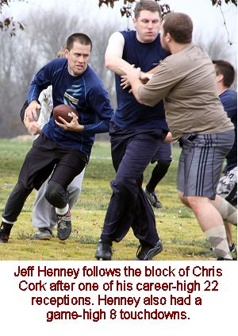
4th and goal to go. Truitt tried to hit Patrick Cork in the front
of the endzone, but Jake Hoalt made a great defensive play and was
able to knock the ball away for another turnover on downs. “I’m
not sure there have been 3 straight possessions where neither team
scored in the past decade – maybe longer,” remarked
announcer and former Cork Bowl great Reggie Truitt. “The defenses
were definitely playing at high levels and the offenses were both
having trouble getting into a groove.” The Irukandjis were
finally able to end the scoring drought with an 18-yard strike from
Howard to Henney to tie the game at 14-14 to end the 1st quarter
(VIDEO).
In the lowest scoring 1st quarter in Cork Bowl
history, the two teams combined for just 28 points as both quarterbacks
struggled to find a rhythm on offense. “For the first time
in a long time, the defenses had the advantage early in the game,”
said Greg Howard. “Every possession was a struggle to move
the ball and find the endzone.” Howard completed 8-of-14 passes
with all 8 completions going to Jeff Henney (5) and Jake Hoalt (3).
Willy Truitt was 11-for-19 in the quarter with Robert Trimble, Patrick
Cork and Evan Woodard all finishing the quarter with 3 catches.
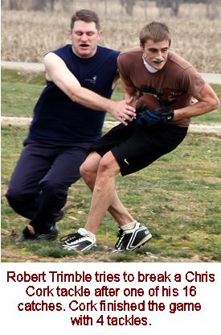 The
Kinkajous took a 21-14 lead on a short touchdown pass to Patrick
Cork to start the second quarter, but Howard connected with Henney
three times on the ensuing drive including a 1 yard touchdown toss
to tie the game at 21-21. The completion was the 100th of Howard’s
short career at quarterback. Truitt hit Trimble on the first pass
of the next drive and Trimble was able to shake a tackle and take
it the length of the field for a 38 yard touchdown strike and a
28-21 Kinkajous lead (VIDEO).
Henney scored from 5 yards out to tie the game at 28-28, and the
Irukandjis had a chance to take their first lead of the game as
they were able to force a 3rd and 20 on the next Kinkajous drive.
They decided to roll the dice and bring pressure on Truitt, but
Truitt was able to evade the blitz and reach across the first down
line for a 22-yard run to keep the drive alive. Two plays later,
Truitt hit Trimble on a dump-off pass that Trimble was able to take
all the way into the endzone to give the Kinkajous a 35-28 lead.
The touchdown pass was the 200th of Truitt’s illustrious career.
Howard found Henney in the corner of the endzone on a beautifully
thrown ball to the game at 35 apiece (VIDEO).
Once again the Kinkajous were able to answer quickly with another
length-of-the-field touchdown pass to Trimble to move the Kinkajous
back in front at 42-35 (VIDEO).
To that point in the second quarter, Truitt had completed only 4
passes and all 4 went for touchdowns. The Irukandjis needed just
two plays to score on the next drive with consecutive completions
to Jake Hoalt and Jeff Henney. The 14-yard strike to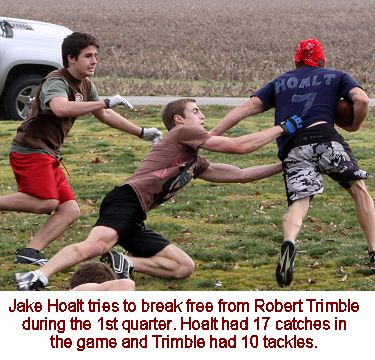
Henney was his fifth touchdown reception in a row and tied the game
at 42-42 with 6 minutes left in the first half. Truitt moved the
Kinkajous deep into Irukandjis territory, but was faced with a 4th
and goal from the two yard line. He was able to hit Patrick Cork
for a short touchdown and a 49-42 edge with 4 minutes remaining.
Howard found Jake Hoalt for
a 14-yard touchdown to tie the game at 49-49 with just 23 seconds
left in the first half (VIDEO).
After a short pass and timeout, Patrick Cork was able to get behind
the defense and haul in a deep throw from Truitt, but Chris Cork
was just able to keep his brother out of the endzone with a tackle
at the 1 yard line with 9 seconds left. The catch was #275 in Patrick’s
career. The Irukandjis blitzed on the next play and Truitt threw
the ball away with 6 seconds left on the clock. The game’s
first controversial play soon followed as Truitt tried a shovel
pass to Evan Woodard but Woodard was stood up outside of the endzone
and pushed backwards as time was running out. The Kinkajous called
timeout, but it was ruled that time had expired and the first half
was over. “I didn’t think there was any way that play
lasted 6 seconds, but you have to deal with the calls that are made,”
recalled Patrick Cork. "It was a huge momentum killer because
we knew they got the ball the start the second half." With
the Kinkajous unable to score to the end the half, they went into
halftime tied at 49-49 with the 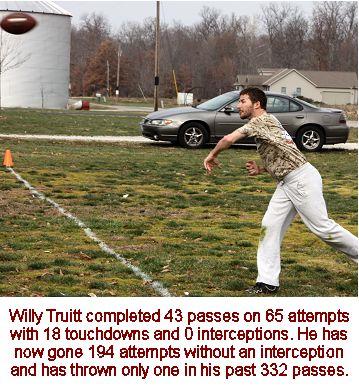 Irukandjis
starting the second half with possession with a chance to take their
first lead of the game.
After a slow first quarter,
both teams put 35 points on the board in the second quarter. Greg
Howard was 15-for-19 in the quarter with 5 touchdowns for the Irukandjis.
Henney led all receivers with 6 catches and 4 touchdowns in the
quarter while teammate Jake Hoalt had 5 catches and a touchown.
In the first half, Howard was 23-for-33 with 7 touchdowns and 1
interception. Henney had 11 catches and 5 touchdowns while Jake
Hoalt had 8 catches and a pair of scores. All 7 touchdowns were
scored by Henney and Hoalt. Josh Williamson and Chris Cork each
had 2 receptions in the half. After spraining his ankle midway through
the first quarter, Ross Massey did not return to the field in the
first half leaving the rest of the team on the field for the entire
second quarter. “That’s definitely not something I was
anticipating,” said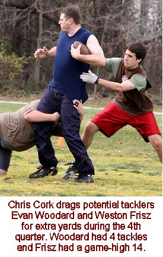
veteran receiver Chris Cork. “I think I played more minutes
in the first half than I did the entire game last year.” The
additional minutes played by the Irukandjis in the first half would
seem to have an effect in the late stages of the game.
For the Kinakjous, Willy Truitt completed just
10 passes in the quarter on 17 attempts, but 5 went for touchdowns.
Patrick Cork had 4 catches and 2 touchdowns in the quarter while
Trimble scored on all 3 of his receptions. Evan Woodard had 3 catches
in the quarter. For the half, Truitt was 21-for-36 with 7 touchdowns
and no interceptions. Patrick Cork had 7 catches and 3 scores in
the half and Trimble had 6 receptions with 3 touchdowns. Evan Woodard
recorded 6 grabs and Evan Barmes had 2 catches and a touchdown in
the half.
The Irukandjis started the third
quarter with the ball, and Ross Massey fought off the ankle injury
and returned to the field. His presence was instantly felt as Howard
hit Massey for a 23-yard touchdown strike for the first catch and
score of Massey’s career (VIDEO).
It also gave the Irukandjis their first lead of the game at 54-49.
Trailing for the first time, the Kinkajous responded with another
quick-strike touchdown drive as Patrick Cork found himself wide
open behind the defense for a 38-yard touchdown to tie the game
at 56-56 (VIDEO).
Howard and Massey hooked up again on the next drive as Massey was
able to limp up the sideline for a 22-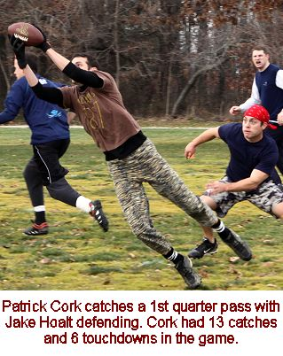 yard
touchdown and a 63-56 Irukandjis advantage. Truitt connected on
four straight passes on the following drive which was capped off
with a 2-yard touchdown to Weston Frisz to tie the game at 63. It
was the first catch and score of his career.
Henney and Chris Cork both hit
career milestones on the next drive as Henney hauled in his 100th
career reception and Cork caught the 175th pass of his career. The
completion to Cork was the 9th straight completion from Howard as
the Irukandjis seemed to be rolling on offense, however the next
play was a six second “no play” and then Frisz continued
to make his presence felt on the defensive side of the ball batting
away a pass intended for Massey in the endzone. Another incompletion
put the Irukandjis in 4th and goal from just outside the 10 yard
line. The Kinkajous brought Trimble on a blitz, and Howard tried
to escape but had to heave a throw off his back foot as Trimble
closed in. The ball hung in the air for a long time, but Jake Hoalt
was able to run under it in the endzone for a crucial 4th down conversion
and touchdown to make the score 70-63 (VIDEO).
“"I had a brain fade on defense and could have given
us a big stop,” replied Willy Truitt who was in coverage.
“Trimble had Greg scrambling and I decided to be a spectator
at that point. Then I see the ball go up and I still almost had
time to get over there and break up the pass. If I would have stayed
within five yards of Jake, I would have had enough time to run in
the house, grab the Duck Hunt gun, and come back out and shoot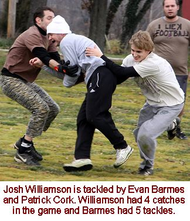
down that wounded duck Greg chucked up in the air. Regardless, kudos
to them, they had to have that play.” "As soon as Trimble
came, I knew we were in trouble," recalled Howard. "I
tried to buy as much time as I could and then put the ball up for
grabs - thankfully Jake kept working to get open."
The Kinkajous misfired on their
first two passes of the next drive setting up a crucial 3rd and
20 with their backs against their own endzone. Despite not having
any catches since early in the first quarter, Truitt looked for
Evan Barmes on a fly route and hit Barmes perfectly in stride for
the most impressive play of the game – and yet another length
of the field touchdown for the Kinkajous – that tied the game
at 70-70 (VIDEO).
“That was without a doubt the biggest play up to that point
in the game,” remarked Patrick Cork. "If we don’t
get a score there, they’re probably going to go up two touchdowns
late in the third quarter and that’s tough to make up.”
Howard found Jake Hoalt for a 16-yard score for a 77-70 advantage,
but as they seemed to do all game long, the Kinkajous answered immediately
with another 38-yard length-of-the-field catch and run touchdown
from Robert Trimble to tie the game at 77-77 (VIDEO).
In the quarter, the Kinkajous had only run 7 plays from scrimmage,
but had scored 4 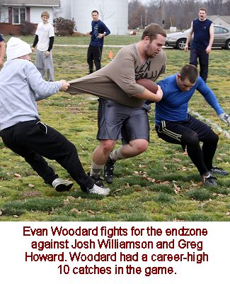 times.
Howard found Hoalt for a touchdown for the 3rd straight drive to
put the Irukandjis their last lead of the game at 84-77 with 5 minutes
left in the third quarter.
The Irukandjis put pressure
on Truitt on the first play of the ensuing drive and Truitt launched
a deep throw down the middle that Trimble ran under for a 28 yard
gain. Truitt and Trimble connected again on the next play for a
10 yard touchdown that tied the game at 84-84 with time winding
down in the quarter. A 14 yard completion to Henney moved the ball
near midfield for the Irukandjis, but an incomplete pass on 3rd
down set up another big 4th down play. The Kinkajous brought pressure
again for only the third time all game and Howard was unable to
evade Trimble and attempted to make a throw as he was being taken
to the ground and the ball fell incomplete turning the ball back
over to the Kinkajous on the last play of the 3rd quarter with a
chance to regain the lead. “We didn’t send pressure
very often because Greg is tough to bring down if he gets away,”
said Trimble. “But when we did, we tried to pick the right
times to do it and it happened to work out for us that time.”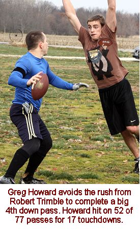
For the second quarter in a row both teams put
35 points on the board in the third period. Willy Truitt completed
just 9 passes in the frame on 12 attempts, but the Kinkajous scored
5 times. In the 2nd and 3rd quarters, Truitt only had a total of
19 completions but did have 10 touchdowns. Robert Trimble led the
way for the Kinkajous with 4 catches and 2 touchdowns in the quarter.
Patrick Cork had 3 catches and scored once while Evan Barmes and
Weston Frisz each scored on their only catches in the period.
Greg Howard was 14-for-21 in the quarter as
the Irukandjis ran 23 plays in the quarter compared to only 12 for
the Kinkajous. Jake Hoalt had 5 receptions and 3 touchdowns in the
quarter to lead the Irukandjis. Henney had 4 catches and Ross Massey
scored on both of his catches after returning from a 1st quarter
ankle injury.
With the 4th down stop of the
Irukandjis on the last play of the 3rd quarter, the Kinkajous had
a short field to work with and wasted no time turning the stop into
points as Truitt hit Patrick Cork in the flat and he was able to
stretch across the goal line for the score to put the Kinkajous
back on top 91-84. They would not trail again the rest of the way.
The Irukandjis found themselves with another 4th and 10 play on
the following drive and Howard hit Hoalt on a short pass and Hoalt
was just able to fight across the first down line on a solid tackle
by Weston Frisz to keep the drive alive. Hoalt capped off the drive
with a 2 yard score – the 50th career touchdown pass for Greg
Howard. The Kinkajous struck quickly once again as Truitt connected
on two 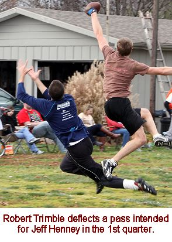 straight
passes to Woodard and then a short 2-yard scoring toss to Trimble
to make the score 98-91.
With 15 minutes remaining in
the game, the Irukandjis needed to continue to score to keep pace
with the Kinkajous, however on the first play of the drive, Jeff
Henney was stripped of the ball by Robert Trimble and rookie Weston
Frisz, who was everywhere on defense all game long, scooped up the
loose ball and returned it 10 yards for what appeared to be a touchdown,
but he was ruled out of bounds at the 6-yard line (VIDEO).
“Turnovers are always the deciding factor in Cork Bowl,”
remarked Henney. “I had just told the guys at halftime how
important it was to protect the ball and then I put it on the ground
at the worst possible time.” With all the momentum in their
favor, the Kinkajous again scored on the first play following a
defensive stop as Truitt hit Trimble on a short crossing route,
and with 13:30 remaining in the game, the Kinkajous had a two-score
lead at 105-91. Howard found Henney for an 8-yard score on the next
drive to make it 105-98, but the Kinkajous marched down the field
and took some valuable minutes off the clock with a six play drive
that ended with a one-yard touchdown for Evan Woodard, and a Superman
celebration in the endzone that pushed the lead to 112-98 (VIDEO).
With less than 9 minutes to
go in the game, the Irukandjis were in hurry-up mode and scored
on a two-play drive with completions to Henney and Hoalt to cut
the lead in half at 112-105, but the Kinkajous, as they seemed to
do all day, responded with a one-play drive of their own for a score.
Patrick Cork found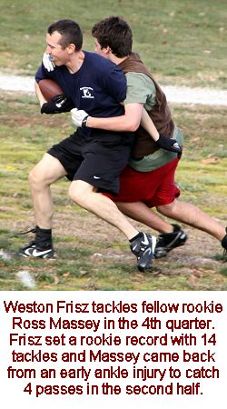
himself open on his patented out route near midfield and followed
a Robert Trimble block into the endzone to put the Kinkajous up
119-105 (VIDEO).
In desperate need of quick scores, the Irukandjis started the next
drive with two long incompletions – losing precious time off
the clock in the process. They eventually converted a 4th and 4
at midfield on a nice catch and run by Josh Williamson, and Howard
Henney in the endzone yet again to make the score 119-112, but the
drive took nearly four minutes as the clock ticked under 4 minutes
to go. “That drive was big for them because it took them a
long time to get in the endzone,” said Willy Truitt. “We
knew if we could make them use clock that we might only have to
score one more time to seal the game.”
A short completion to Trimble set up a 2nd and
17 play and once again Patrick Cork was wide open at midfield but
he let the ball get into his body and dropped the easy pass, and
the Irukandjis had life again. “That’s unacceptable
at any point in the game, but at that point it was even more crucial,”
remarked Cork. “All we had to do was move the ball and keep
putting points on the board and I really let my team down there.
Thankfully, Willy and Trimble stepped up and sealed the game for
us.” Now with a 3rd and 17 deep in their own territory, the
Kinkajous were expecting a blitz and they got it from the Irukandjis.
Truitt took off to his right and was pushed out of bounds by Jake
Hoalt short of the first down marker. With two minutes left, and
the Kinkajous faced with a 4th and 5 play, Truitt hit Trimble over
the middle after a nice spin move on his pattern and Trimble raced
into the endzone for what would be the game-sealing score to make
the game 126-112.
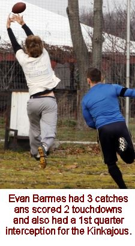 The
Irukandjis used their first timeout and tried to put together a
game plan for the next drive. A 20 yard completion to Ross Massey
started the drive, but a pass intended for Henney was knocked away
by a diving Trimble and the Irukandjis had to use their second timeout
as the clock clicked closer to one minute. “That play was
huge because it made sure they couldn’t score before the 1
minute warning,” added Cork. “That would have given
them another timeout and would have forced us to get a first down
to finish the game.” The next play resulted in another long
incompletion before Howard hit Henney in the front of the endzone
on a great diving catch to make the score 126-119 (VIDEO),
but there were only 49 seconds remaining and they had just one timeout.
“At that point, all we had to do was complete passes and stay
in bounds,” said Willy Truitt. And that’s exactly what
they did. Truitt took the pressure off the Kinkajous with a 1st
down completion to Patrick Cork who was able to scamper across the
first down line forcing the Irukandjis to use their final timeout
with 35 seconds left. The Irukandjis blitzed with Greg Howard on
the next play and Truitt made the smart decision to go down to keep
the clock running. The sack was the first sack in Cork Bowl since
Josh Williamson recorded one in Cork Bowl 12. One last play as time
expired ended Cork Bowl 22 with the Kinkajous victorious by a score
of 126-119.
For the third straight period,
the Irukandjis scored 35 points with Howard completing 15 passes
on 23 attempts. Henney led all receivers with 7 catches in the quarter
and 3 touchdowns. Hoalt had 4 catches and the other 2 scores. For
the Kinkajous, Willy Truitt saved his best quarter for last as he
was 13-for-17 with 6 touchdowns. Trimble led the team with 6 catches
and 3 touchdowns. Evan Woodard had 4 catches and a touchdown and
Patrick Cork had 3 catches and scored twice.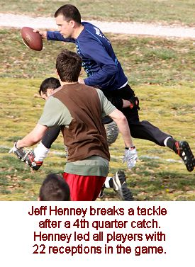
The time of possession was dominated by the
Irukandjis by a 68-32 margin. They ran 81 plays to 70 for the Kinkajous.
Part of the reason was the no-huddle offense of the Kinkajous, but
not only did they hurry up between plays, the scored in a hurry
as well. The Kinkajous had 10 plays in the game of 25 yards or more
in length compared to just 2 for the Irukandjis. The Kinkajous had
7 scoring drives of either 1 or 2 plays in length compared to only
2 for the Irukandjis. After turning the ball over on downs on their
last 2 possessions of the 1st quarter, the Kinkajous scored on every
one of their remaining possessions save for the last drive of the
first half when they ran out of time and the last drive of the game
when they ran out the clock. “It seemed like we had to work
awfully hard to score the entire game,” said Irukandjis quarterback
Greg Howard. “We would have a drive that took 5 or 6 plays
and last 4 or 5 minutes long and then the Kinkajous would score
on their first play.” "I honestly believed we only stopped
ourselves on some early drives,” said Willy Truitt. “The
guys were figuring out their routes and working to get into rhythm.
TrimbleTron had a couple drops early, which were uncharacteristic.
I wasn't worried. We had all the tools we needed on offense."
Greg Howard set new career highs
in completions (52) and attempts (77) in the defeat. He threw 17
touchdown passes and had 1 interception and rushed the ball on several
occasions effectively with opposing blitzes. Jeff Henney’s
last game was one of his best as he tied his career highs in receptions
with 22 and touchdowns with 8. Jake Hoalt had another strong outing
tying his career high with 17 catches and scoring 7 touchdowns (one
off his career high). Henney and Hoalt combined for 39 of the 52
completed passes on the 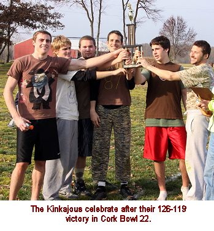 day
for Irukandjis. Chris Cork had 5 receptions, but failed to find
the endzone for the first time in his 22 year career. Ross Massey,
after missing most of the first half with an ankle injury, returned
in the second half to catch 4 passes and score 2 touchdowns. Josh
Williamson also recorded 4 receptions, but also failed to find the
endzone for the second year in a row.
For the Kinkajous, Willy Truitt
was 43-for-65 with 18 touchdowns and 0 interceptions. He also scrambled
away from pressure on a number of occasions totaling just under
50 yards on the ground. The 43 completions were the fewest Truitt
has had in a Cork Bowl since Cork Bowl 15 when he led his team to
a sloppy, snowy win with just 37 completions. For the second year
in a row Truitt did not turn the ball over through the air, and
has not had a pass intercepted since the 2nd quarter of Cork Bowl
19 – a span of 191 attempts. And he has only 1 interception
dating back 332 attempts to Cork Bowl 16. “Turnovers are the
key to winning Cork Bowls, and Willy Truitt simply does not turn
the ball over,” remarked brother Reggie Truitt who announced
Cork Bowl 22. “It’s no wonder he has led his team to
four straight championships while playing quarterback.” Truitt’s
only loss since Cork Bowl 16 was in Cork Bowl 20 when he played
receiver.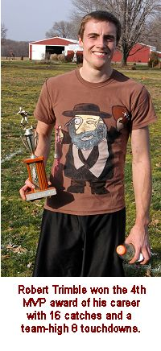
Robert Trimble led the way for
the Kinkajous on offense with 16 receptions and 8 touchdowns. Patrick
Cork had 13 catches and 6 scores and Evan Woodard was the third
Kinkajous receiver to hit double figures with a career-high 10 catches,
including one touchdown. Evan Barmes had 3 grabs and scored twice
and rookie Weston Frisz scored on his only catch of the game. Trimble
collected his third MVP award in the past five years for the winning
Kinkajous. Trimble had no less than 3 catches in any quarter and
made big play after big play throughout the second half on offense,
and forced the game-turning fumble early in the 4th quarter. "It
was great to have Trimble back on my team,” remarked Willy
Truitt. “What a player. When it comes to playmakers, there
is Trimble, then there is the rest."
Defensively, rookie Weston Frisz
set a new Cork Bowl rookie record with a game-high 14 tackles for
the Kinkajous. The previous record had been held by Jeff Henney
who tallied 12 tackles in his first game in Cork Bowl 11. Frisz
also recovered the crucial fumble in the 4th quarter and knocked
down a handful of passes throughout the game in the secondary. “He
was everywhere for us on defense today,” remarked Willy Truitt.
“He was making tackles and breaking up passes from the first
drive on. I think he was a little timid on offense, but he was anything
but that on defense. He’s got 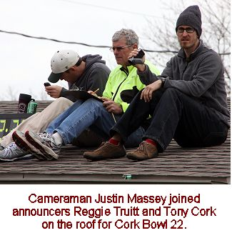 a
great future ahead of him – especially if he can find ways
to get more involved on offense.” Robert Trimble had 10 tackles
and a forced fumble, and Evan Barmes recorded 5 tackles and had
the first interception of his career. Willy Truitt, Evan Woodard
and Patrick Cork all had 4 tackles in the game.
Jake Hoalt led the Irukandjis with 10 tackles
and Jeff Henney had 6. Josh Williamson had 5 tackles and Chris Cork
had 4. Greg Howard recorded 3 tackles and had the first sack in
a Cork Bowl since Cork Bowl 12 late in the 4th quarter. Ross Massey
had one tackle in his first game.
Other than Henney, there were
no immediate retirement announcements made following the game. It
will be interesting to see if Kevin Ryan can make his way back into
the game after missing this year’s game with a foot injury.
With some young players like Barmes and Frisz beginning to make
their impacts already, the future is looking bright for the next
generation. Some veterans were determined to come back for another
season, including Willy Truitt. "I'm looking forward to coming
back for my 18th season. Like I always say, it's in the hands of
my agent and the league. Feeding my 16-pound Beagle, Eddie, is not
cheap. Something has to pay the bills."
Complete Cork Bowl 22 Higlights (VIDEO)
Cork Bowl 22 Game Notes:
Willy Truitt has gone 194
passes without throwing an interception and has thrown just one
in his past 332 attempts.....Robert Trimble and Jeff Henney became
the 6th and 7th players to join the "Century Club" with
over 100 career receptions - Trimble has 113 and Henney 108......Jake
Hoalt moved from 11th to 8th all-time in receptions with 85......Weston
Frisz is tied for 18th all-time in tackles after just one game......Robert
Trimble is now just one tackle shy of 100 in his career.....Greg
Howard moved into 4th all-time in passing with 140 completions and
54 touchdowns......Willy Truitt now has more than double the next
player in completions (572 to 278) and touchdowns (213 to 93) and
has gone over 900 career attempts......Patrick Cork extended his
all-time receptions to lead to over 100 over the next receiver (281
to 177) and is 3 touchdowns away from 100 in his career.....
(Click Here for More Pictures!)
For all pictures from the game visit Cork Bowl
22's Picasa/Google Image Center
Back to top
Cork Bowl 22 Stats
Back to Cork Bowl
|